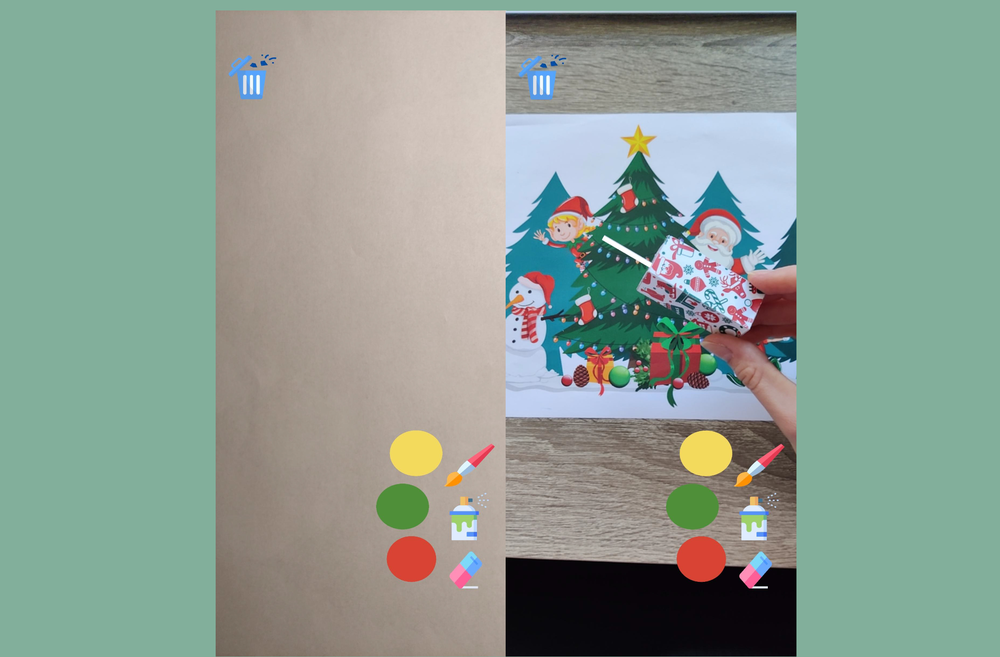

PaintAR
Collaborators: Solbritt Gateman, Haris Vidimlic, Johanna Lundqvist
Duration: November 2021 - January 2022
PaintAR is an augmented reality android application that enables the users to draw in 3D. The purpose of PaintAR was to study whether audio and haptic feedback could have a positive effect on the user's immersion and experience when painting in 3D on an AR application.
PaintAR was developed with Unity and Vuforia, using image tracking. It consists of several different painting tools and color options, each with its own, corresponding audio and haptic feedback. The evaluation consisted of a within-group experiment with one control condition without audio and haptic feedback and one with the feedback, each condition was followed by an immersion questionnaire.
I, among other things, handled the data analysis, which was done using Microsoft Excel.
Technologies: Unity, Vuforia